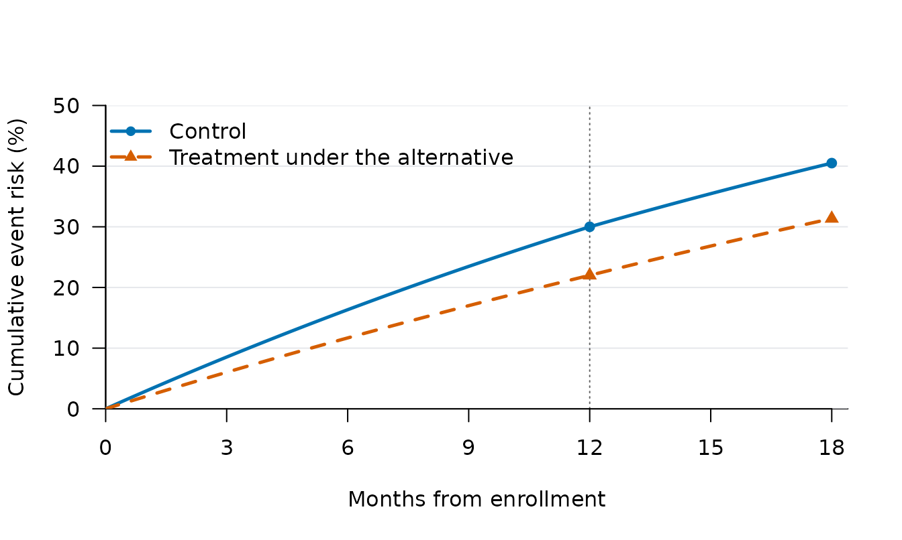
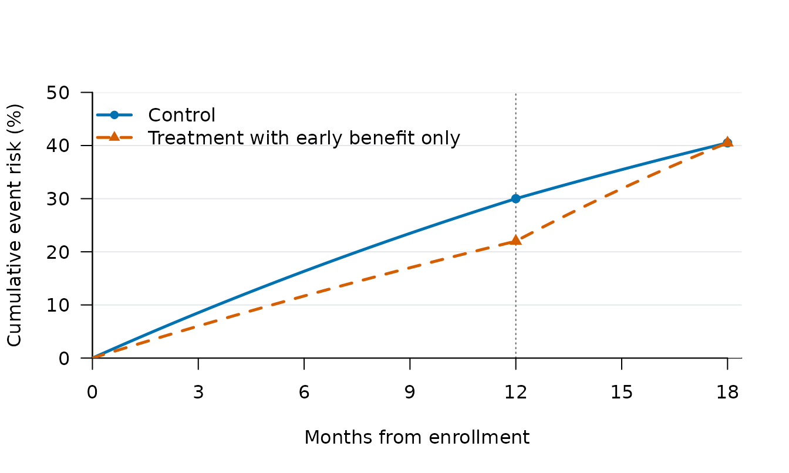

Extending an endpoint from 12 to 18 months
Graeme L. Hickey
Source:vignettes/endpoint-horizons-example.Rmd
endpoint-horizons-example.RmdThis example plans four interim analyses at enrollment of 100, 200, 300, and 400 participants. The success endpoint is 12 months at the first three interims and switches to 18 months if the trial reaches the fourth. If no early stop occurs, enrollment ends at 500 participants, followed by one final analysis after 18-month endpoint ascertainment. There is no enrollment-triggered interim at 500.
The schedule is prespecified; it is not chosen from interim results. All participants have planned outcome collection through 18 months from enrollment. At each look, success imputation uses only available follow-up through that look’s endpoint. Futility imputation uses a separate model fitted to available follow-up through 18 months and predicts success at N=500 with the 18-month endpoint. At the fourth interim, both predictions use the 18-month endpoint.
The technical companion explains the separate data cuts, predictive models, and stopping sequence with generic flow charts. The settings below illustrate the workflow; they have not been selected to satisfy a type I error or power requirement.
Specify the endpoint schedule
endpoint_schedule <- data.frame(
N = c(100, 200, 300, 400),
horizon = c(12, 12, 12, 18)
)
knitr::kable(data.frame(
Analysis = c(paste("Interim at N =", endpoint_schedule$N), "Maximum-N final"),
Success_endpoint = c(endpoint_schedule$horizon, 18),
Futility_target = c(rep("N = 500, month 18", 4), "Not applicable")
), col.names = c("Analysis", "Success endpoint (months)", "Futility target"))| Analysis | Success endpoint (months) | Futility target |
|---|---|---|
| Interim at N = 100 | 12 | N = 500, month 18 |
| Interim at N = 200 | 12 | N = 500, month 18 |
| Interim at N = 300 | 12 | N = 500, month 18 |
| Interim at N = 400 | 18 | N = 500, month 18 |
| Maximum-N final | 18 | Not applicable |
Figure 1. The prespecified 12-to-18-month schedule.
Only continued trials reach the next look. The endpoint change occurs at
N=400, before evaluating that look,
without using its results to choose the endpoint. Immediate-success
stopping is disabled by Qn = 1 in this example. Futility
always predicts the final outcome at N=500 and 18 months, including at the earlier
12-month looks.
Stopping for expected success fixes the endpoint. If accrual stops at N=300, the final analysis uses those 300 participants at 12 months. A nonsignificant result is a final failure: the trial does not reopen at 18 months. Continued outcome collection through 18 months does not provide a second opportunity to declare success under this design.
Define the generating and analysis assumptions
The outcome is an adverse event. Under the null scenario, both arms have a 30% event risk by month 12 and a further 15% conditional event risk between months 12 and 18 among those event-free at month 12. Under the alternative, the treatment risks are 22% and 12%, respectively. These assumptions define piecewise-constant hazards over both intervals from the outset.
control_hazard <- c(
-log(1 - 0.30) / 12,
-log(1 - 0.15) / 6
)
treatment_hazard <- c(
-log(1 - 0.22) / 12,
-log(1 - 0.12) / 6
)
risk_table <- data.frame(
Arm = c("Control / null treatment", "Alternative treatment"),
Hazard_0_12 = c(control_hazard[1], treatment_hazard[1]),
Hazard_12_18 = c(control_hazard[2], treatment_hazard[2]),
Risk_12 = 1 - exp(-12 * c(control_hazard[1], treatment_hazard[1])),
Risk_18 = 1 - exp(-12 * c(control_hazard[1], treatment_hazard[1]) -
6 * c(control_hazard[2], treatment_hazard[2]))
)
knitr::kable(risk_table, digits = 4, col.names = c(
"Arm", "Hazard 0-12", "Hazard 12-18", "12-month risk", "18-month risk"
))| Arm | Hazard 0-12 | Hazard 12-18 | 12-month risk | 18-month risk |
|---|---|---|---|---|
| Control / null treatment | 0.0297 | 0.0271 | 0.30 | 0.4050 |
| Alternative treatment | 0.0207 | 0.0213 | 0.22 | 0.3136 |
The 18-month risks are cumulative risks from enrollment, not the conditional risks in the second interval. All times are measured in months and hazards in events per participant-month.

Figure 2. Cumulative event risk under the main generating assumptions. The curves show 1-S(t). Under the null, treatment follows the control curve. Under the alternative, treatment has lower event risk at both endpoints: 22% versus 30% at month 12, and 31.36% versus 40.5% at month 18. The dotted vertical line marks month 12.
Participants are randomized equally in blocks of two and accrue at an average rate of 10 per month. There is no dropout in the main example. Predictive imputation uses independent Gamma(0.5, 20) shape-rate priors for each arm and hazard interval. These have mean hazard 0.025 per month, with prior contributions of 0.5 events and 20 participant-months in each interval. The second interval can be entirely prior-driven at early looks, so its prior is part of the design specification even while success is assessed at 12 months.
The completed-data analysis is Bayesian binary, comparing
treatment-minus-control event risk against zero in the
"less" direction. It uses independent Beta(1, 1) priors and
numerical quadrature. The predictive Gamma model generates missing event
times; it is distinct from this beta-binomial analysis. With no missing
final endpoint outcomes, prior_surv_final does not enter
the completed binary analysis, but it is specified explicitly alongside
the other simulation settings.
fixed_design <- list(
hazard_control = control_hazard,
generation_cutpoints = 12,
cutpoints = 12,
N_total = 500,
endpoint_schedule = endpoint_schedule,
final_horizon = 18,
dropout_horizon = 12,
lambda = 10,
lambda_time = NULL,
block = 2,
rand_ratio = c(control = 1, treatment = 1),
prop_loss = c(control = 0, treatment = 0),
prior_surv = c(0.5, 20),
prior_surv_final = c(0.5, 20),
empty_interval = "prior",
method = "bayes-bin",
prior_bin = c(1, 1),
bin_method = "quadrature",
alternative = "less",
h0 = 0,
imputed_final = FALSE,
N_impute = 100,
N_trials = 500,
ncores = 1,
backend = "sequential"
)
rule <- list(Fn = 0.05, Sn = 0.90, Qn = 1, prob_ha = 0.975)generation_cutpoints describes the true hazard changes;
cutpoints describes the predictive hazard model. They
coincide here but need not coincide in a sensitivity analysis. The null
value and beta priors are the same at both endpoints, so
horizon_settings is not needed. That argument can specify
different null values or analysis settings by horizon when the design
requires them.
There are 500 trial replicates per scenario and 100 predictive
imputations per look and endpoint. Quadrature does not use
N_mcmc. These counts keep the example manageable; the
resulting Monte Carlo intervals show the precision available. Increasing
N_trials improves the operating-characteristic estimates.
Changing N_impute changes the precision of the stopping
calculation itself, so it should be specified when calibrating and
validating the design.
Simulate all looks and both horizons
We first simulate complete trial paths. Both endpoint horizons are evaluated at every planned look, including combinations not used by the current schedule. This permits later comparisons of when to switch endpoints without repeating model fitting or imputation.
sim_horizon_paths() derives the look sizes from
endpoint_schedule$N and saves
sort(unique(c(endpoint_schedule$horizon, final_horizon)))
at every look. Here, that gives months 12 and 18, supporting either a
switch at N=300 or a switch at N=400. Including final_horizon
also ensures 18-month predictions are available if all interims use 12
months. Outcome collection runs through final_horizon = 18
for every participant from enrollment.
null_args <- c(fixed_design, list(
hazard_treatment = control_hazard,
seed = 18011
))
alternative_args <- c(fixed_design, list(
hazard_treatment = treatment_hazard,
seed = 18012
))
paths <- list(
null = do.call(sim_horizon_paths, null_args),
alternative = do.call(sim_horizon_paths, alternative_args)
)
paths$alternative
#> Goldilocks endpoint-horizon paths
#> 500 trials; 4 interim looks; horizons: 12, 18
#> Maximum N: 500 ; final endpoint: 18
#> Failed calculations: 0
#> Memory: 42.5 MbSeparate seeds generate independent null and alternative simulations. Within a scenario, candidate schedules will share the same trial histories and saved predictive evidence.
Examine operating characteristics
summarise_sims() reports the probability of success as
power. Under the joint null used here, this is the type I
error; under the alternative, it is power for the complete adaptive
design, which may establish success at either endpoint.
operating <- summarise_sims(results)
operating <- operating[match(names(results), operating$scenario), ]
knitr::kable(operating[c(
"scenario", "n_used", "power", "power_mc_lower", "power_mc_upper", "mean_N"
)], digits = 3, col.names = c(
"Scenario", "Trials used", "Success", "MC lower", "MC upper", "Mean N"
))| Scenario | Trials used | Success | MC lower | MC upper | Mean N |
|---|---|---|---|---|---|
| null | 500 | 0.036 | 0.023 | 0.056 | 338.4 |
| alternative | 500 | 0.554 | 0.510 | 0.597 | 403.0 |
The limits are 95% Monte Carlo intervals, describing uncertainty from a finite number of trial replicates. They are not clinical confidence intervals. Under this example’s null, treatment and control have the same event risks at both 12 and 18 months. Any success is therefore a false positive, whichever endpoint establishes it. The example does not establish type I error control at 0.025: the thresholds and schedule need calibration together, followed by independent validation and checks under other plausible null models. Equal risks at 18 months alone would not guarantee equal risks at 12 months; see Type I error across endpoint times.
Futility is reported in two ways. stop_futility is the
ordinary probability of stopping for binding futility; under the
alternative, it is the probability of a futility stop despite the
assumed treatment benefit. futility_and_success_at_max is
the joint probability of a futility stop and success had the same
simulated trial continued to N=500 with
the 18-month endpoint. It is not conditional on having stopped for
futility.
knitr::kable(operating[c(
"scenario", "stop_futility", "futility_and_success_at_max",
"futility_and_success_at_max_mc_lower", "futility_and_success_at_max_mc_upper",
"futility_and_success_at_max_n_missing"
)], digits = 3, col.names = c(
"Scenario", "Futility", "Futility and max-N success", "MC lower", "MC upper",
"Missing comparisons"
))| Scenario | Futility | Futility and max-N success | MC lower | MC upper | Missing comparisons |
|---|---|---|---|---|---|
| null | 0.724 | 0.000 | 0.000 | 0.008 | 0 |
| alternative | 0.162 | 0.028 | 0.017 | 0.046 | 0 |
For example, if 200 of 1,000 trials stopped for futility and 40 of those would have succeeded at maximum N, the two reported probabilities would be 20% and 4%. The fraction among futility stops would instead be 40/200 = 20%, which is a different denominator. If futility were the only early stopping rule, the 4% would also be the power lost, in percentage points. When other stopping rules are present, such as stopping for expected success, the interpretation is more complex. See Interpreting the two futility measures. The missing-comparison count refers to unavailable hypothetical final analyses, not to trials that fail to demonstrate benefit.
Benefit at 12 months but no benefit at 18 months
Equal event risks at the final endpoint do not imply equality at every earlier endpoint. Keep the control model above, with 30% risk by month 12 and 40.5% by month 18. Now let treatment reduce the 12-month risk to 22%, but have enough events between months 12 and 18 to reach the same 40.5% final risk. The required conditional risk in the second interval is 1-(1-0.405)/(1-0.22)=23.72\%, compared with 15% on control.
control_risk18 <- 1 - exp(-sum(control_hazard * c(12, 6)))
early_benefit_hazard <- c(
-log(1 - 0.22) / 12,
(-log(1 - control_risk18) + log(1 - 0.22)) / 6
)
early_benefit_risks <- data.frame(
Arm = c("Control", "Treatment: early benefit only"),
Risk_12 = 1 - exp(-12 * c(control_hazard[1], early_benefit_hazard[1])),
Conditional_risk_12_18 = 1 - exp(-6 * c(
control_hazard[2], early_benefit_hazard[2]
)),
Risk_18 = 1 - exp(-c(
sum(control_hazard * c(12, 6)),
sum(early_benefit_hazard * c(12, 6))
))
)
stopifnot(isTRUE(all.equal(
early_benefit_risks$Risk_18[1], early_benefit_risks$Risk_18[2]
)))
knitr::kable(early_benefit_risks, digits = 4, col.names = c(
"Arm", "12-month risk", "Conditional risk, 12-18 months", "18-month risk"
))| Arm | 12-month risk | Conditional risk, 12-18 months | 18-month risk |
|---|---|---|---|
| Control | 0.30 | 0.1500 | 0.405 |
| Treatment: early benefit only | 0.22 | 0.2372 | 0.405 |

Figure 3. Early benefit followed by equal event risks at 18 months. The curves show 1-S(t), using the same scale as Figure 2. Treatment has lower risk at month 12, followed by a higher hazard than control between months 12 and 18, so both arms reach 40.5% risk at month 18. This scenario has a true treatment benefit at 12 months and a true equality null at 18 months.
We simulate this scenario with the same enrollment, analysis settings, priors, endpoint schedule, and decision thresholds, using an independent seed. Each participant still has one event history spanning both endpoints.
early_benefit_args <- c(fixed_design, list(
hazard_treatment = early_benefit_hazard,
seed = 18014
))
early_benefit_paths <- do.call(sim_horizon_paths, early_benefit_args)
early_benefit_result <- do.call(apply_horizon_rules, c(list(
paths = early_benefit_paths, endpoint_schedule = endpoint_schedule
), rule))
endpoint_sims <- early_benefit_result$sims
endpoint_outcomes <- list(
"Success at 12 months: true benefit" = with(
endpoint_sims, trial_success & endpoint_horizon == 12
),
"Success at 18 months: false positive" = with(
endpoint_sims, trial_success & endpoint_horizon == 18
),
"Success at either endpoint" = endpoint_sims$trial_success
)
endpoint_counts <- vapply(endpoint_outcomes, sum, numeric(1))
endpoint_intervals <- t(vapply(endpoint_counts, function(count) {
binom.test(count, nrow(endpoint_sims))$conf.int
}, numeric(2)))
endpoint_summary <- data.frame(
Outcome = names(endpoint_outcomes),
Count = endpoint_counts,
Probability = endpoint_counts / nrow(endpoint_sims),
MC_lower = endpoint_intervals[, 1],
MC_upper = endpoint_intervals[, 2]
)
knitr::kable(endpoint_summary, digits = 3, row.names = FALSE, col.names = c(
"Outcome", "Trials", "Probability", "MC lower", "MC upper"
))| Outcome | Trials | Probability | MC lower | MC upper |
|---|---|---|---|---|
| Success at 12 months: true benefit | 87 | 0.174 | 0.142 | 0.210 |
| Success at 18 months: false positive | 6 | 0.012 | 0.004 | 0.026 |
| Success at either endpoint | 93 | 0.186 | 0.153 | 0.223 |
All three probabilities use the same denominator: 500 evaluable trials from 500 requested trials. There were 0 failed path calculations and 0 excluded trials. The intervals are exact 95% binomial Monte Carlo intervals. The endpoint-specific rows are unconditional probabilities across all evaluable trials, not probabilities conditional on stopping at that endpoint.
Here, the second row is the probability of a false claim under the full adaptive procedure: the 18-month null is true, while the 12-month null is false. Adding both success rows gives overall success, but would incorrectly count genuine 12-month findings as type I errors. Conversely, a 12-month success cannot establish an 18-month benefit. In the original joint-null scenario, both endpoint nulls are true, so every success counts as a false positive.
This example illustrates which events to count; it does not validate error control. Assessment across plausible joint and partial null scenarios, followed by independent validation of the chosen schedule and thresholds, is needed to support endpoint-specific claims. See Type I error across endpoint times for the distinction.
Inspect a trial and its two predictive models
The trace contains only looks reached under the applied rule. We select an alternative-scenario trial that reached the latest interim observed in these simulations, so the endpoint schedule is visible. This selected trace is illustrative; operating characteristics above use all evaluable trials.
trace <- results$alternative$traces
trial_id <- trace$trial[which.max(trace$planned_N)]
trial_trace <- trace[trace$trial == trial_id, ]
knitr::kable(trial_trace[c(
"planned_N", "calendar_time", "success_data_horizon", "futility_data_horizon",
"ppp_stop_now", "ppp_success_at_max", "decision"
)], digits = 3, col.names = c(
"N", "Calendar month", "Success cut", "Futility cut", "P current", "P max", "Decision"
))| N | Calendar month | Success cut | Futility cut | P current | P max | Decision |
|---|---|---|---|---|---|---|
| 100 | 11.820 | 12 | 18 | 0.00 | 0.26 | continue |
| 200 | 22.258 | 12 | 18 | 0.01 | 0.12 | continue |
| 300 | 31.316 | 12 | 18 | 0.01 | 0.32 | continue |
| 400 | 39.159 | 18 | 18 | 0.02 | 0.05 | continue |
P current predicts success in the enrolled cohort at
that look’s endpoint; P max predicts success at N=500 and month 18. The current-cohort
probability is compared with Qn and then Sn.
Futility is checked only if neither success rule applies. Equality with
a boundary does not trigger stopping.
The saved paths also contain the separate posterior diagnostics. The following table shows the Gamma updates for this trial at N=300. With a master cutpoint at month 12, the success model uses one interval per arm and the futility model uses two. Only follow-up already available on the look date enters either calculation.
trial_position <- match(trial_id, vapply(
paths$alternative$trials, function(x) x$trial, integer(1)
))
look_position <- match(300, endpoint_schedule$N)
evidence <- paths$alternative$trials[[trial_position]]$interims[[look_position]]
posterior_table <- do.call(rbind, lapply(seq_along(evidence), function(j) {
posterior <- evidence[[j]]$diagnostics$posterior
data.frame(
Horizon = attr(paths$alternative, "arguments")$horizon_settings$horizon[j],
posterior[c("arm", "interval_start", "interval_end", "observed_events",
"observed_exposure", "posterior_mean_hazard")]
)
}))
knitr::kable(posterior_table, digits = 3, row.names = FALSE, col.names = c(
"Cut", "Arm", "From", "To", "Events", "Exposure", "Mean hazard"
))| Cut | Arm | From | To | Events | Exposure | Mean hazard |
|---|---|---|---|---|---|---|
| 12 | control | 0 | 12 | 34 | 1202.142 | 0.028 |
| 12 | treatment | 0 | 12 | 30 | 1250.958 | 0.024 |
| 18 | control | 0 | 12 | 34 | 1202.142 | 0.028 |
| 18 | control | 12 | 18 | 7 | 272.790 | 0.026 |
| 18 | treatment | 0 | 12 | 30 | 1250.958 | 0.024 |
| 18 | treatment | 12 | 18 | 5 | 280.367 | 0.018 |
The 12-month success model has no contribution from exposure or events after month 12. The 18-month futility model includes available observations from the second interval. Technical details of prespecified endpoint horizons gives the general definition, including when a hazard interval spans the shorter endpoint.
Compare an earlier switch using the same paths
An alternative schedule switches at N=300. It uses the same interim enrollment sizes, supported horizons, final endpoint, and analysis assumptions, so the saved paths are sufficient for this comparison.
earlier_schedule <- data.frame(
N = c(100, 200, 300, 400),
horizon = c(12, 12, 18, 18)
)
earlier_results <- lapply(paths, function(scenario_paths) {
do.call(apply_horizon_rules, c(list(
paths = scenario_paths,
endpoint_schedule = earlier_schedule
), rule))
})
comparison <- rbind(
data.frame(Switch = "N = 400", summarise_sims(results)),
data.frame(Switch = "N = 300", summarise_sims(earlier_results))
)
comparison <- comparison[order(
match(comparison$scenario, names(paths)),
match(comparison$Switch, c("N = 400", "N = 300"))
), ]
knitr::kable(comparison[c(
"scenario", "Switch", "power", "stop_futility", "mean_N"
)], digits = 3, row.names = FALSE, col.names = c(
"Scenario", "Switch to 18 months", "Success", "Futility", "Mean N"
))| Scenario | Switch to 18 months | Success | Futility | Mean N |
|---|---|---|---|---|
| null | N = 400 | 0.036 | 0.724 | 338.4 |
| null | N = 300 | 0.032 | 0.726 | 338.0 |
| alternative | N = 400 | 0.554 | 0.162 | 403.0 |
| alternative | N = 300 | 0.554 | 0.162 | 401.8 |
Different Fn, Sn, Qn, and
prob_ha values can also be passed to
apply_horizon_rules() without repeating simulation. A new
generating scenario, prior, null margin, final horizon, or imputation
count requires new paths. Candidate outcomes are paired by trial, so
uncertainty in a difference should use paired outcomes rather than
combine the two marginal Monte Carlo intervals as if they were
independent. Selecting a schedule from these results calls for
independent validation; this comparison does not select an optimal
switch point.
Optional endpoint-specific margins
The main example uses h0 = 0 at both endpoints. To
illustrate horizon_settings, suppose success instead
requires a treatment-minus-control risk difference below -0.03 at 12
months and below -0.05 at 18 months. These represent absolute risk
reductions greater than 3 and 5 percentage points, respectively, for the
current method = "bayes-bin" and
alternative = "less" settings.
margin_args <- alternative_args
margin_args$horizon_settings <- data.frame(
horizon = c(12, 18),
h0 = c(-0.03, -0.05)
)
margin_args$seed <- 18015
margin_paths <- do.call(sim_horizon_paths, margin_args)
margin_result <- do.call(apply_horizon_rules, c(list(
paths = margin_paths, endpoint_schedule = endpoint_schedule
), rule))This is an optional illustration and does not alter the main example.
Changing h0 changes the success hypothesis, so it requires
new paths; changing only prob_ha changes the evidence
threshold and can reuse existing paths. Because prior_bin
is omitted from horizon_settings, the common Beta(1, 1)
priors remain in use at both horizons. The optional
rmst_tau column applies to method = "rmst",
rather than this binary analysis.
Direct simulation and analysis dates
When evaluating one fixed schedule, sim_horizon_trials()
skips interim calculations after a terminal stop. The short run below
reproduces the first three alternative-scenario trials from the
complete-path calculation. It retains the same set of horizons,
settings, and seed; only the number of requested trials is reduced.
direct_args <- alternative_args
direct_args$N_trials <- 3
direct <- do.call(sim_horizon_trials, c(direct_args, rule))
reference <- results$alternative$sims[results$alternative$sims$trial <= 3, ]
stopifnot(identical(direct$sims, reference))
direct_table <- direct$sims[c(
"trial", "N_enrolled", "endpoint_horizon", "stopping_reason", "trial_success"
)]
direct_table$stopping_reason <- paste0("`", direct_table$stopping_reason, "`")
knitr::kable(direct_table, format = "pipe", col.names = c(
"Trial", "N enrolled", "Endpoint", "Stopping reason", "Success"
))| Trial | N enrolled | Endpoint | Stopping reason | Success |
|---|---|---|---|---|
| 1 | 500 | 18 | maximum_sample_size |
FALSE |
| 2 | 200 | 12 | expected_success |
TRUE |
| 3 | 500 | 18 | maximum_sample_size |
FALSE |
The final analysis uses the endpoint fixed when accrual stops. The following table summarizes the analysis and decision dates in the alternative scenario, separately by stopping reason and endpoint.
timing <- results$alternative$sims |>
dplyr::group_by(stopping_reason, endpoint_horizon) |>
dplyr::summarise(
Trials = dplyr::n(),
Mean_analysis_ready = mean(analysis_ready_time),
Mean_decision = mean(decision_time),
.groups = "drop"
)
timing$stopping_reason <- paste0("`", timing$stopping_reason, "`")
knitr::kable(timing, format = "pipe", digits = 1, col.names = c(
"Stopping reason", "Endpoint", "Trials", "Analysis ready", "Decision"
))| Stopping reason | Endpoint | Trials | Analysis ready | Decision |
|---|---|---|---|---|
expected_success |
12 | 99 | 34.4 | 34.4 |
expected_success |
18 | 61 | 58.0 | 58.0 |
futility |
12 | 49 | 37.7 | 25.8 |
futility |
18 | 32 | 57.8 | 39.9 |
maximum_sample_size |
18 | 259 | 67.8 | 67.8 |
These are calendar months from first enrollment. For expected-success
stops and maximum-enrollment trials, decision_time equals
analysis_ready_time. For futility or immediate-success
stops, the decision is made at the interim look; later follow-up does
not change it. The technical
companion gives a numerical example.
Add dropout or save results
For a sensitivity analysis with a 5% independent dropout probability
by month 12, retain dropout_horizon = 12 and set
prop_loss = 0.05. This corresponds to a dropout probability
of approximately 7.4% by month 18, before accounting for events that
occur first. The snippet also requests imputation of missing final
outcomes. It requires new simulation paths because the generating and
final-analysis assumptions have changed.
dropout_args <- alternative_args
dropout_args$prop_loss <- c(control = 0.05, treatment = 0.05)
dropout_args$dropout_horizon <- 12
dropout_args$imputed_final <- TRUE
dropout_args$seed <- 18013
dropout_paths <- do.call(sim_horizon_paths, dropout_args)
dropout_result <- do.call(apply_horizon_rules, c(list(
paths = dropout_paths, endpoint_schedule = endpoint_schedule
), rule))Saving the complete paths retains the fixed design settings, posterior diagnostics, predictive scores, and failure records needed for subsequent calibration. Save the applied schedule and results as well when retaining evidence for a particular design comparison.
saveRDS(list(
paths = paths,
endpoint_schedule = endpoint_schedule,
rule = rule,
results = results,
early_benefit = list(paths = early_benefit_paths, result = early_benefit_result)
), "endpoint-horizon-calibration.rds")See Calibrating stopping
rules from complete trial paths and Calibrating prob_ha for
type I error control for further calibration guidance.